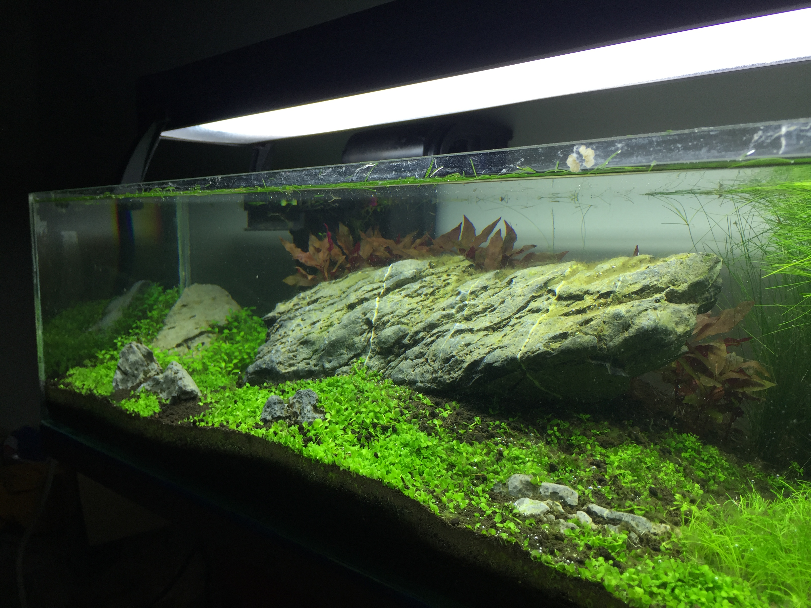
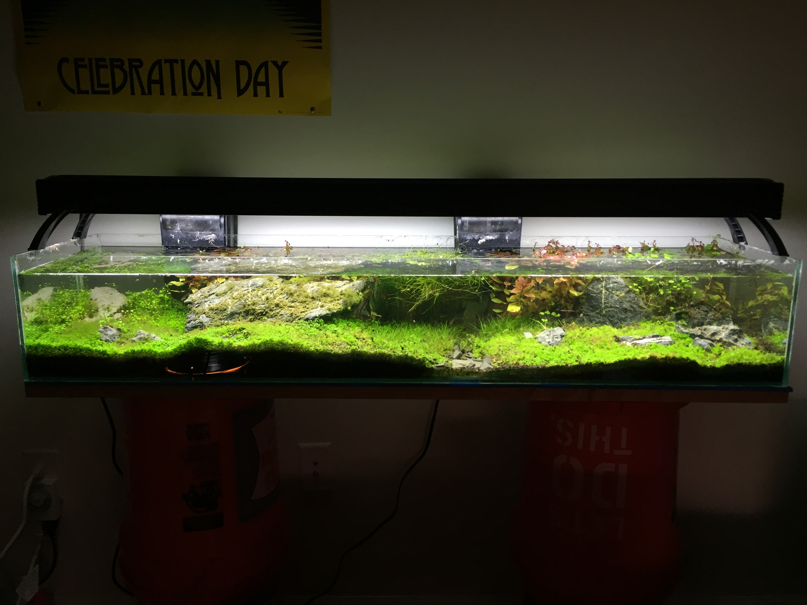
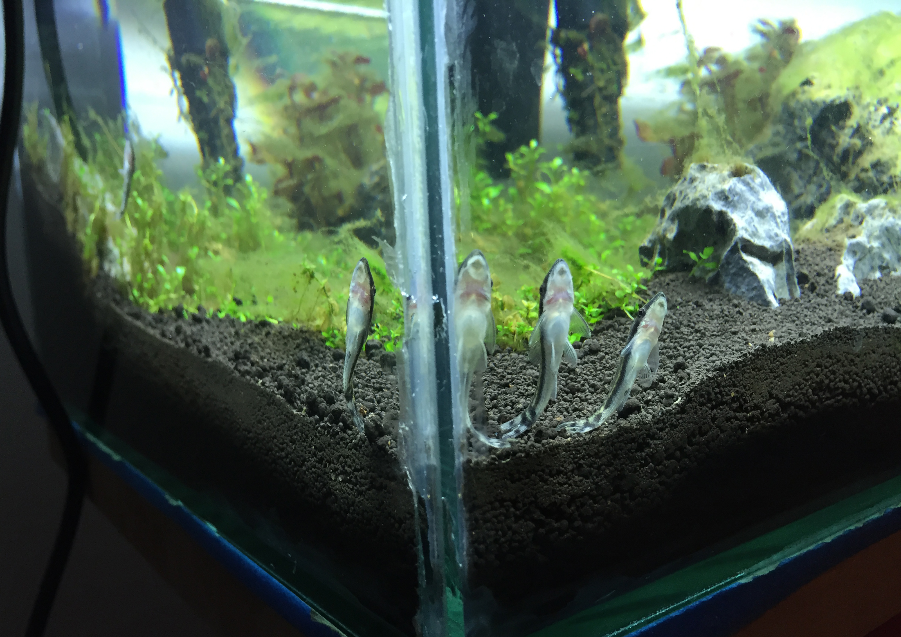
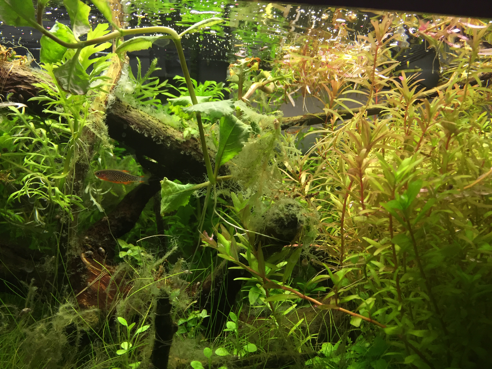
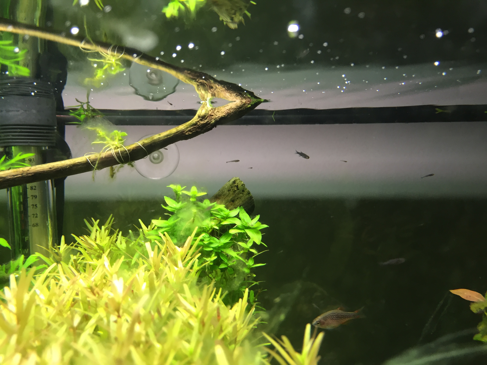
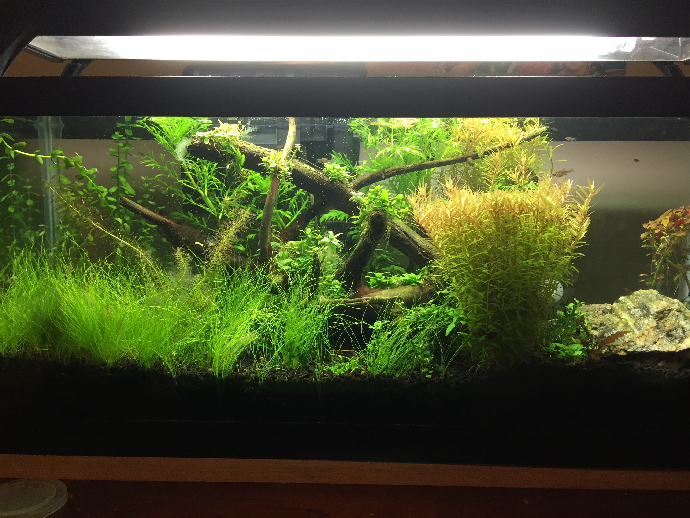

Examples
Here is a gallery of aquascapes, plants and fish:

Baby Dwarf Tears on driftwood in a newly planted tank.

Plant growth in a tank six weeks after initial planting.

Seiryu stone on a carpet of Monte Carlo plants in a six week old tank.

A grown-in long 20 gallon tank.

Two Emerald Rasboras.

Four Otocinclus Catfish.

A Galaxy Rasbora in a fully established tank.

Galaxy Rasbora fry (babies).

An established 20 gallon tank.